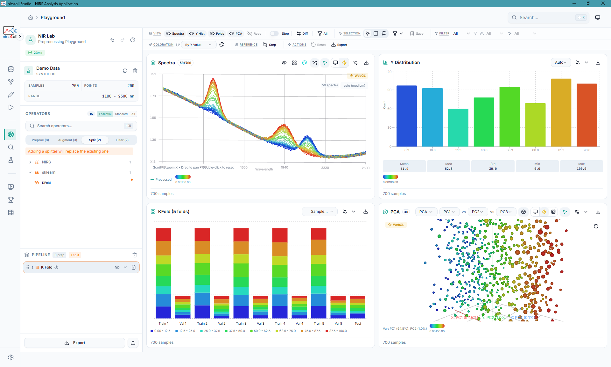
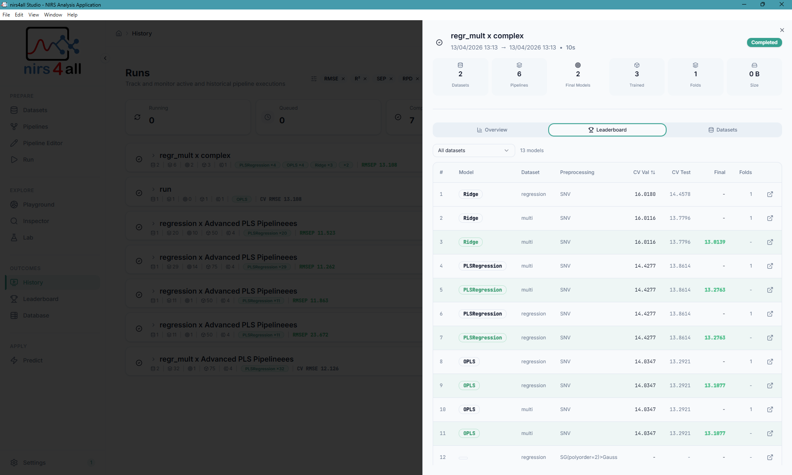
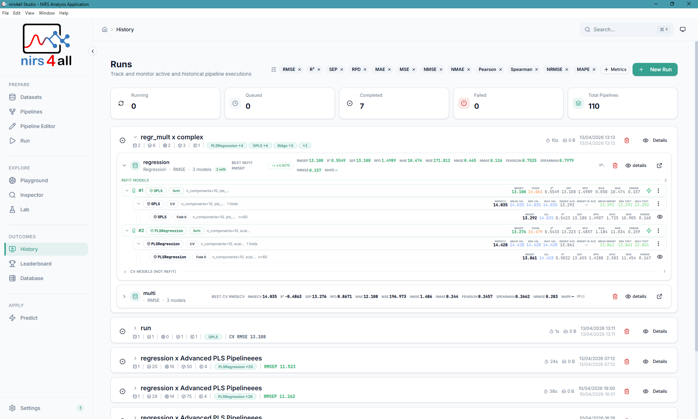
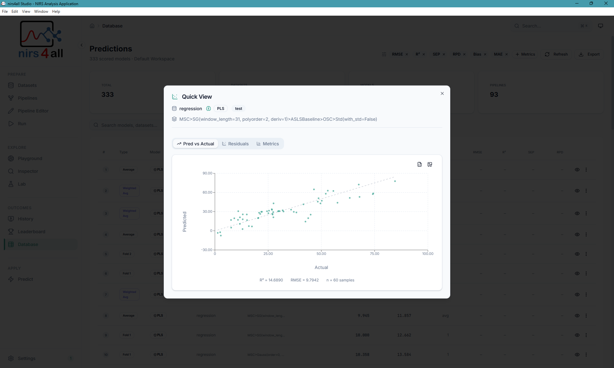
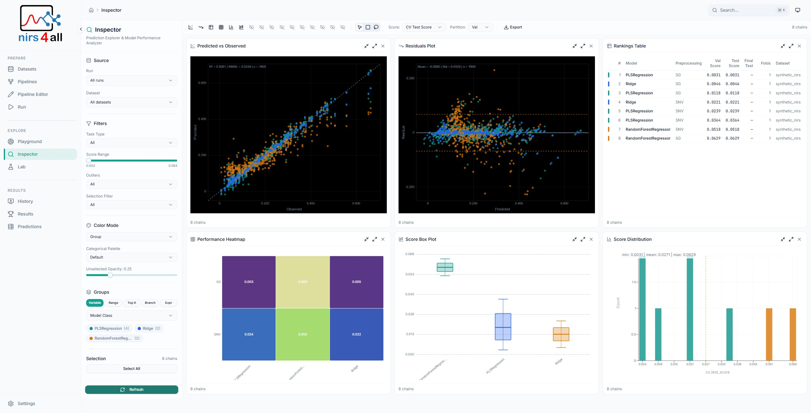
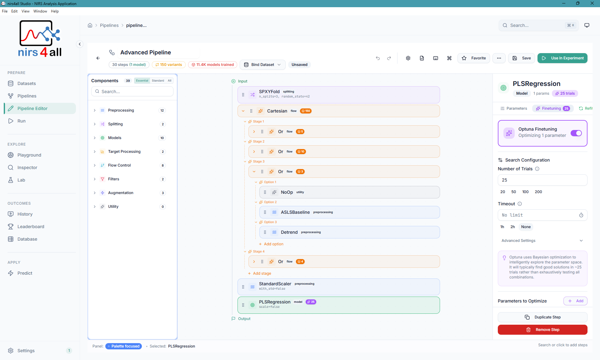
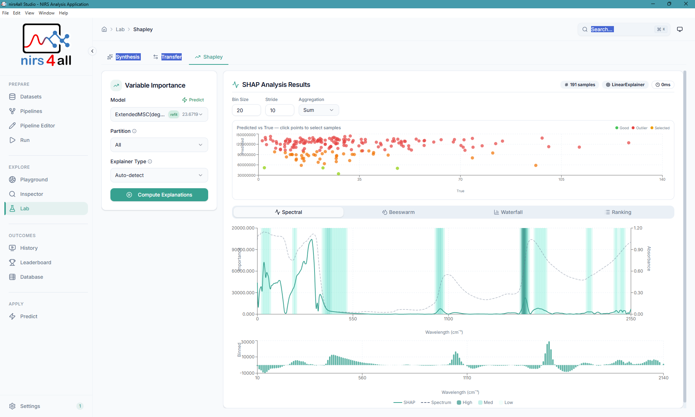
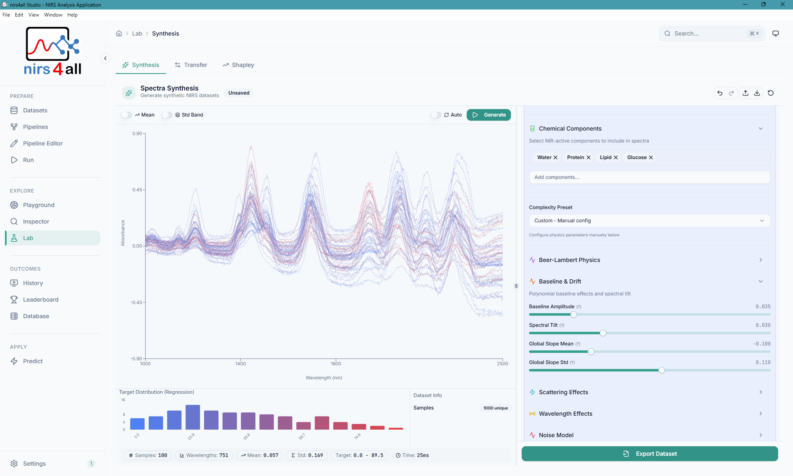
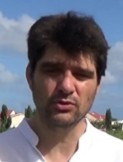

From raw spectra to deployed models — a comprehensive Python framework and desktop application for Near-Infrared Spectroscopy, built by researchers, shared with the world.
nirs4all provides both a powerful Python library for developers and researchers, and a full-featured desktop application for interactive exploration.
A comprehensive Python framework for Near-Infrared Spectroscopy analysis. Build declarative ML pipelines with 30+ preprocessing transforms, 15+ advanced PLS models, and multi-backend support for scikit-learn, TensorFlow, PyTorch, and JAX. Export trained pipelines as portable .n4a bundles ready for deployment.
A modern desktop application for interactive spectral data exploration and model building. Features a drag-and-drop pipeline builder, real-time spectral visualization, SHAP variable importance analysis, and a native desktop experience powered by Electron — with GPU acceleration support on Windows, Linux, and macOS.
Interactive desktop application for exploring data, building pipelines, and analyzing results — no code required.

The Playground — interactive spectral visualization with real-time preprocessing, distribution charts, stacked composition views, and PCA analysis.

Model ranking with cross-validation scores, RMSE, R², and performance metrics — compare dozens of pipeline variants side by side.

Runs overview — track all experiments, filter by status, and navigate your workspace history.

Predictions page — visualize predicted vs. actual values, inspect residuals, and export results.

The Inspector — deep-dive into individual predictions, spectral contributions, and outlier detection across samples.

The Pipeline — configure and manage your data processing pipelines with ease.

The SHAP — visualize feature importance and contributions for model predictions.

The Synthesis — allow users to generate synthetic data and explore hypothetical scenarios.
Built specifically for NIRS workflows — not generic ML tools adapted for spectra.
Comprehensive NIRS-specific preprocessing including wavelength-aware operators that automatically receive wavelength information.
State-of-the-art Partial Least Squares variants with automatic operator selection via AOM-PLS for optimal model performance.
Unified API across all major ML frameworks. Swap backends without changing your pipeline code.
Express complex workflows — branching, merging, hyperparameter sweeps, cross-validation — with a concise, readable list syntax. Parallel execution via joblib.
Full scikit-learn compatibility enables SHAP integration for spectral band importance visualization, prediction diagnostics, and model transparency.
Export entire trained pipelines as .n4a bundles for seamless deployment and sharing. Includes predict, explain, and retrain capabilities.
Near-infrared spectroscopy provides rapid, non-destructive analysis across industries — from field to laboratory.
Crop quality assessment, soil composition analysis, and phenotyping for plant breeding programs.
Rapid authentication, composition analysis, and quality grading of food products and raw materials.
Pharmaceutical process monitoring, chemical analysis, and materials characterization in research laboratories.
Install from PyPI — no configuration required. Add optional extras for deep learning backends.
# Core library pip install nirs4all # With PyTorch backend pip install nirs4all[torch] # With TensorFlow backend pip install nirs4all[tensorflow] # All backends (sklearn + TF + PyTorch + JAX) pip install nirs4all[all] # GPU/CUDA acceleration pip install nirs4all[all-gpu]
import nirs4all # Run a pipeline on your spectral data result = nirs4all.run( pipeline=[SNV(), PLSRegression(10)], dataset="data.csv" ) # Inspect results print(result.best_rmse) print(result.top(5)) # Deploy the best model result.export("best_model.n4a") # Predict on new spectra preds = nirs4all.predict("best_model.n4a", new_data)
import nirs4all # Preprocessing variants × PLS sweep on n_components pipeline_1 = [ {"_or_": [SNV, MSC, Detrend]}, {"model": { "type": PLSRegression, "param": {"n_components": {"_range_": [2, 20, 5]} } } ] # Stacking: compare PLS vs RF in branches, then merge + meta-learner pipeline_2 = [ {"branch": [ [SNV(), {"model": PLSRegression(10)}], [MSC(), {"model": RandomForestRegressor()}], ]}, {"merge": "predictions"}, {"model": Ridge()}, # meta-learner trained on stacked predictions ] results = nirs4all.run(pipeline=[pipeline_1, pipeline_2], dataset="data.csv")
Researchers and engineers from the PHENOMEN team at CIRAD / UMR AGAP Institut, building open-source tools for spectroscopy science.

nirs4all is developed at CIRAD within the UMR AGAP Institut — a research center dedicated to plant genetics, genomics, and agro-resources.
The French Agricultural Research Centre for International Development — a research organization working with developing countries to tackle international agricultural and development challenges.
Visit CIRAD →Amélioration Génétique et Adaptation des Plantes méditerranéennes et tropicales — a joint research unit focused on plant genetic improvement, genomics, and adaptation for Mediterranean and tropical species.
Visit UMR AGAP →Research using nirs4all and related spectroscopic analysis.
@software{beurier2025nirs4all, author = {Gregory Beurier and Denis Cornet and Lauriane Rouan}, title = {NIRS4ALL: Open spectroscopy for everyone}, url = {https://github.com/GBeurier/nirs4all}, version = {0.8.8}, year = {2026}, }
Everything you need to get started, contribute, or learn more.
Source code, issues, and contributions for the Python library
Source code for the nirs4all Studio desktop application
Full API reference, tutorials, and usage guides on Read the Docs
Official Python package index page with release history
Report bugs, request features, or ask questions
The French Agricultural Research Centre for International Development
Joint research unit for plant genetic improvement and adaptation
Release notes and version history for the nirs4all library